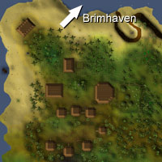

")
Tai Bwo Wannai (Members)
Warning | Introduction | Location | Points of Interest | Personalities
Quests | Jungle Creatures | Miscellaneous
Quests | Jungle Creatures | Miscellaneous
Warning
Until you have completed Jungle Potion, much of Tai Bwo Wannai and many of its inhabitants will be closed to you. Once you have proven yourself friendly, though, the village will open up to you.
Introduction

The village itself is a collection of huts, most of which have a second level above the ground. They also have some advanced Farming techniques that allow them to grow excellent trees. Being a relaxed and fun-loving people, they don't worry too much about things, for example the rather unkempt state of the encroaching jungle or the dilapidated fencing. To save themselves the trouble, they're more than happy to reward enterprising adventurers who help out around the village.
Location

North of the village is the piratical town of Brimhaven, and east of there is the volcano that rises above the TzHaar city.
South through the jungles is the undead-beset Shilo Village.
Points of Interest

Teak and mahogany grow in the enclosure east of the village, and the Farming patch is good for growing a calquat tree.
If you want to earn enough trading sticks to afford their clothes or to pay for access to the teak and mahogany, though, you might like to consider helping them repair and reinforce their fences. To help in the Tai Bwo Wannai Cleanup, you'd best go and have a chat with Murcaily.
Though Tai Bwo Wannai has no bank itself, it does have the Tai Bwo Wannai Parcel Service, run by Rionasta, which will take your items to a bank on the mainland for a small fee (in trading sticks, naturally).
South-east of the village is the Nature Altar, which also allows visitors to arrive from the Abyss. Conveniently, Jiminua, who runs the general store just north-west of the village, will un-note any noted rune essence you might have, to save you running to and from banks all the time.
Personalities

Timfraku is the village chief and should be happy with his job. Sadly for him, he has not seen his sons for quite a while, as they have been wandering the island on their personal quests to prove themselves worthy of manhood.
|

Trufitus is the village's wise man, and a wiser old man would be difficult to find (with the obvious exception of the Wise old Man). He is particularly knowledgeable about the history and legends of Karamja, so if you need some specialist information, he may be just the man you're looking for.
|
|
| Timfraku can be found in his hut in the west of the village. | Trufitus can be found in his hut in the east of the village. |

Murcaily tends the hardwood grove in the east of the village, but is also responsible for the fence to keep the jungle at bay. He obviously can't manage both jobs himself, though, and is always grateful to see adventurers looking for something to do.
|
| Murcaily can be found by the gates to the hardwood grove. |
Quests
The following quests can be started in Tai Bwo Wannai:
- Jungle Potion (Members)
- Tai Bwo Wannai Trio (Members)
Jungle Creatures

Snakes are drawn to the warmth and moisture of jungles, so it's no surprise that Tai Bwo Wannai has a good few thereabouts. The snakes there are no real threat, and are not poisonous, so they make easy fodder for young adventurers.
|

The tribesmen of Karamja are much less civilised than the Tai Bwo Wannai, and some are little more than thieves and raiders. One or two are considered harmless enough to wander the village, but most are forced to hide, waiting for the right time to leap out and attack. Beware, some of them poison their weapons.
|
|
| Snakes can be found in the jungle around and inside the village. | Tribesmen can be found in the south of the village. |

The native creatures of Karamja are at least as dangerous as the people of the village, and jungle spiders are an excellent example of this. They won't crunch under your boot, and they won't flee in terror from a flame, but they will try to sink their poisonous fangs into you and carry you away for a later snack.
|
| Jungle spiders can be found around the village. |
Miscellaneous
- After completing the Tai Bwo Wannai Trio quest, Tamayu will sell you poisoned spears and cleaning cloths, while Tiadeche will sell karambwan and karambwan vessels.
- If you kill a broodoo victim in the Tai Bwo Wannai Cleanup and wear the mask, no one in the village will talk to you - after all, you look like a cursed spirit of the dead.
- Gabooty doesn't just run the Tai Bwo Wannai Cooperative, he also has a drinks business - Gabooty's Tai Bwo Wannai Drinky Store - which sometimes stocks a nice range of gnome drinks. This, of course, means that he might just buy your spare drinks from you, though he'll pay in trade sticks.
- Once you have completed the Skrach Uglogwee subquest of Recipe for Disaster you wil unlock a boat ride shortcut from the Feldip Hills to the coast near Tai Bwo Wannai.

More articles in
Cities and Towns
|
|